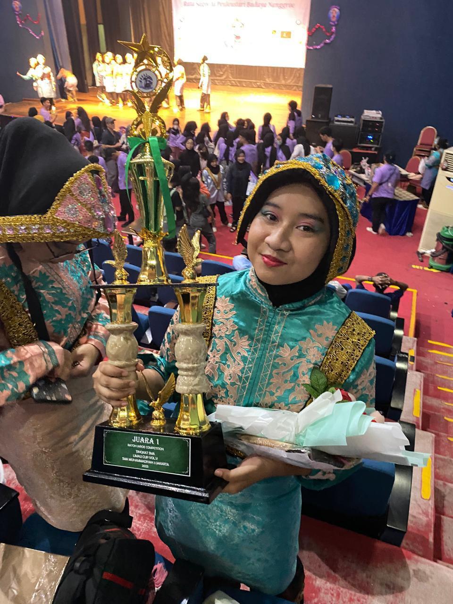
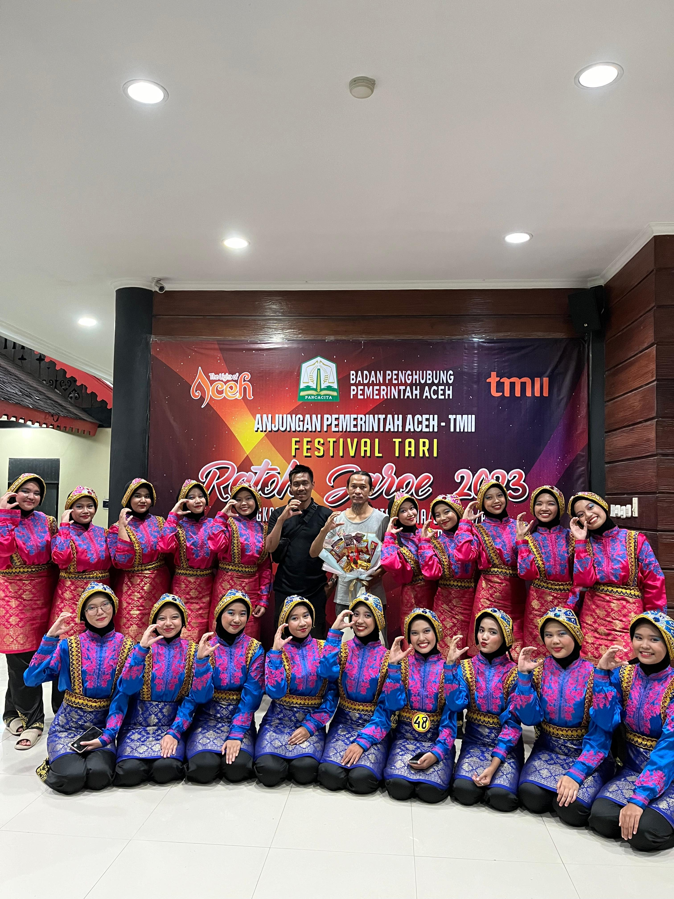
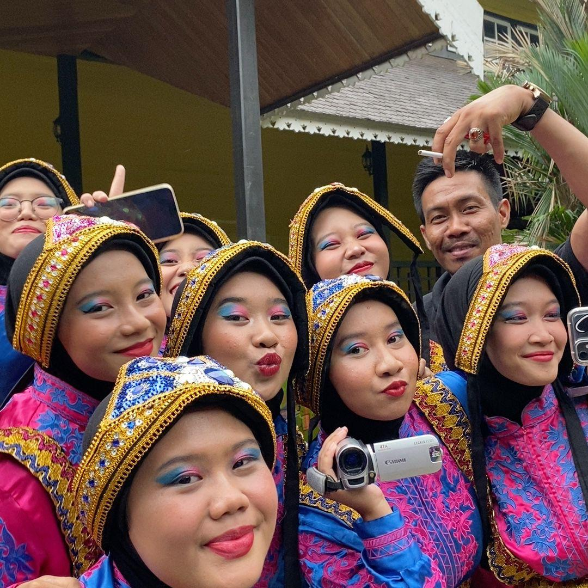
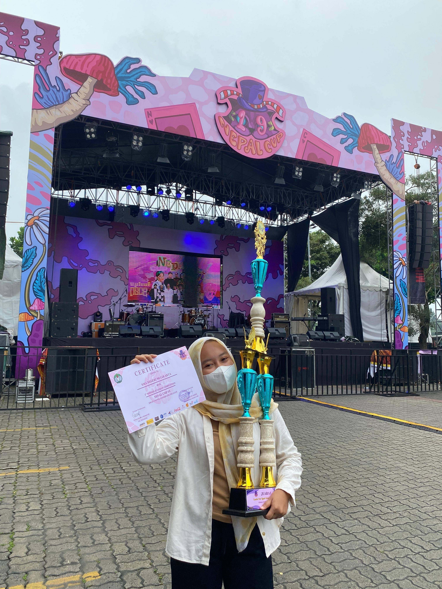
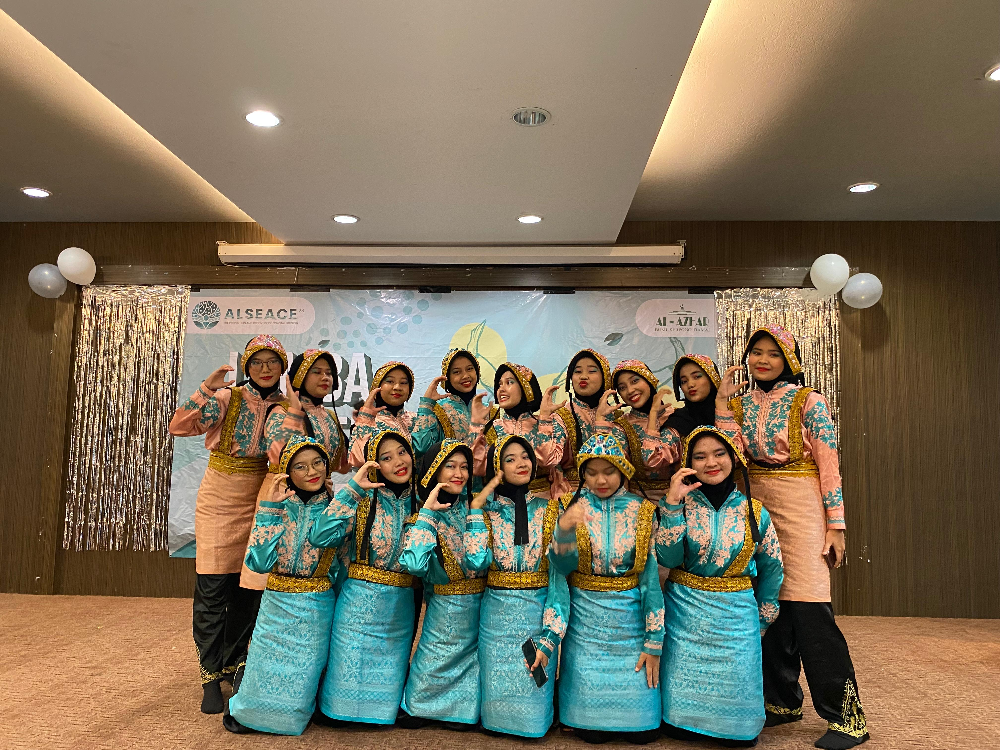
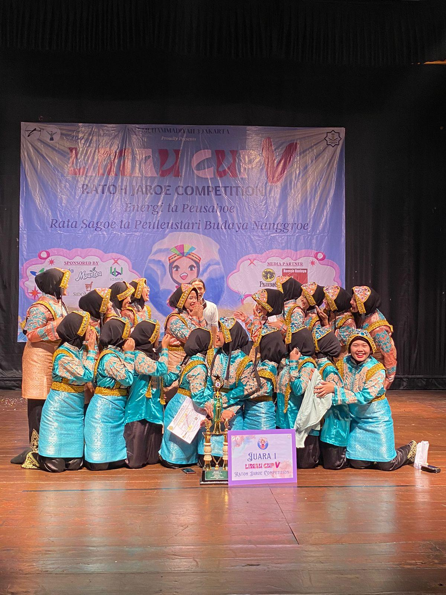
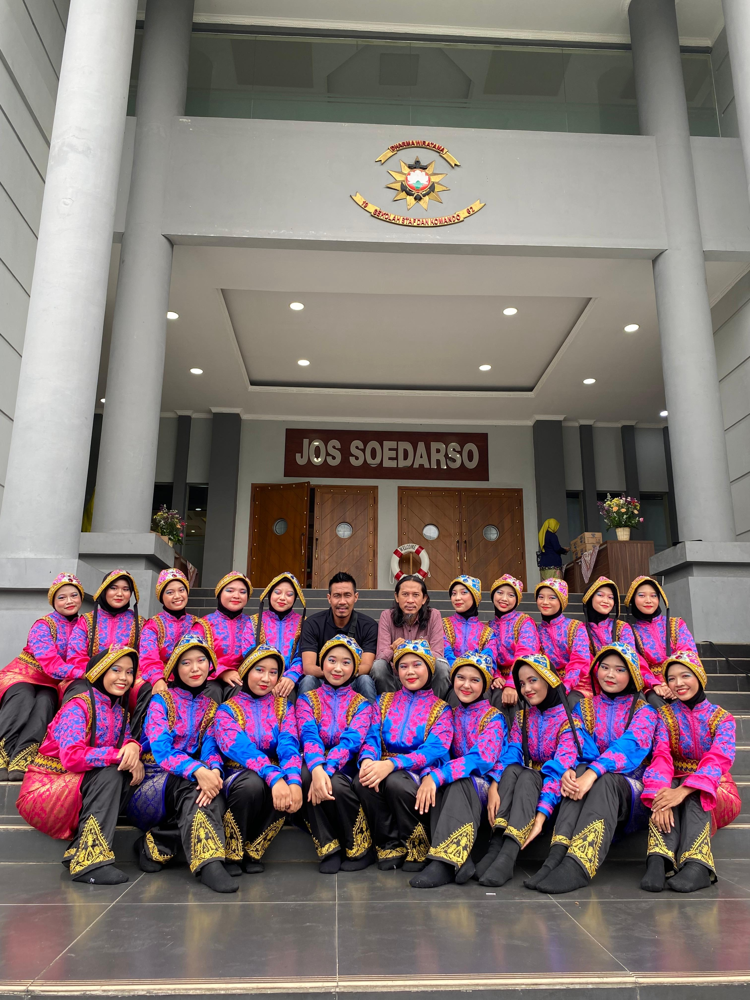
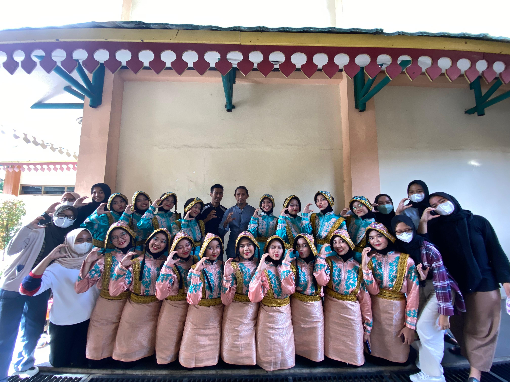

Team Overview
Being a part of the Ratoh Jaroe team taught me discipline, rhythm, and immense teamwork. We practiced rigorously to perfect the synchronized movements and traditional chants that define this beautiful Acehnese dance. Through various performances and competitions, I developed a strong sense of cultural pride and collaborative spirit.
All Documentation








